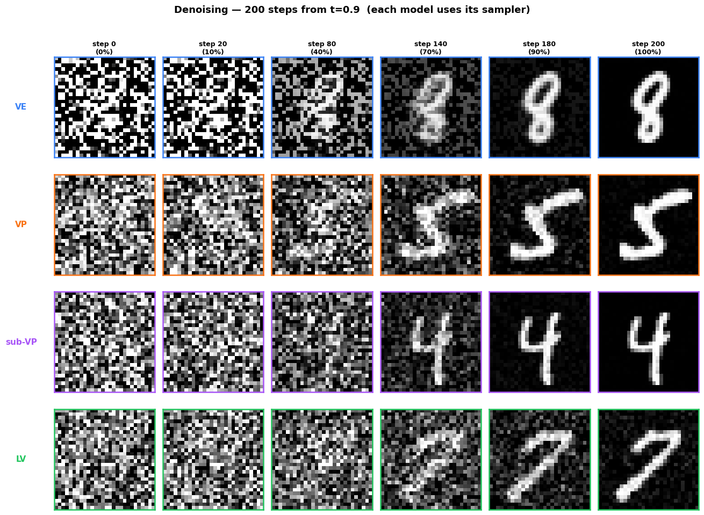
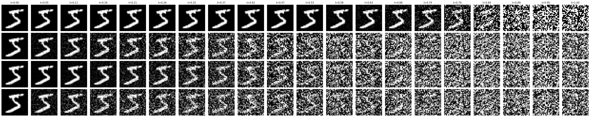

VE, VP, sub-VP, and the new Linear Variance SDE: forward dynamics, transition kernels, conditional scores, and reverse-time processes under a unified affine framework.

backward recuperation under four SDE families.
Having established the theoretical foundations of score-based generative modeling through SDEs, we now examine specific families that arise as continuous-time limits of discrete models. Each family corresponds to a different choice of drift $\mathbf{f}$ and diffusion $G$, leading to distinct perturbation dynamics and trade-offs in training and sampling.
In addition to the well-known VE and VP SDEs (and their sub-VP variant), we introduce the Linear Variance (LV) SDE, a new model whose conditional variance grows linearly with time, yielding a uniform temporal scale and smooth reverse dynamics. We hypothesize this will enable larger step sizes during numerical integration and thus faster inference.
The VE SDE arises as the continuous limit of the SMLD noise sequence. The discrete Markov chain $\mathbf{x}_i=\mathbf{x}_{i-1}+\sqrt{\sigma_i^2-\sigma_{i-1}^2}\,\mathbf{z}_{i-1}$, $\mathbf{z}_{i-1}\sim\mathcal{N}(\mathbf{0},I)$, converges as $N\to\infty$ with $\{\sigma_i\}$ replaced by a continuous function $\sigma(t)$:
The forward process preserves the mean exactly at $\mathbf{x}_0$ and only grows the variance, controlled entirely by $\sigma(t)$. There is no attenuation of the signal, which has direct consequences for the reverse process and initialization.
Differentiating the Gaussian kernel $p_{0,t}(\mathbf{x}_t\mid\mathbf{x}_0)=\mathcal{N}(\mathbf{x}_0,\sigma^2(t)I)$ gives the conditional score. With $\mathbf{f}\equiv\mathbf{0}$ and $G(t)G(t)^\top=\dot\sigma^2(t)I$, substituting into the reverse template:
Points directly from $\mathbf{x}_t$ back toward $\mathbf{x}_0$, scaled by $1/\sigma^2(t)$. No mean attenuation to account for.
The reverse drift is entirely a score term with no deterministic restoring force, reflecting that the forward VE process adds noise without attenuating the signal.
The variance may grow very large by $T$. The prior $p_T$ must have large variance, typically $\mathcal{N}(\mathbf{0},\sigma^2(T)I)$, making initialization less straightforward than VP-type models.
The VP SDE arises as the continuous limit of the DDPM Markov chain $\mathbf{x}_i=\sqrt{1-\beta_i}\,\mathbf{x}_{i-1}+\sqrt{\beta_i}\,\mathbf{z}_{i-1}$. As $N\to\infty$, with $\beta_i$ replaced by $\beta(t)$ and $\bar\beta(t)\triangleq\int_0^t\beta(u)\,du$:
As $\bar\beta(t)\to\infty$, $\Sigma_t\to I$. The variance saturates at $1$ while the signal decays exponentially, yielding $p_T\approx\mathcal{N}(\mathbf{0},I)$. A typical schedule: $\beta(t)=\beta_{\min}+t(\beta_{\max}-\beta_{\min})$ with $\beta_{\min}=0.1$, $\beta_{\max}=10$.
Differentiating the Gaussian kernel with mean $\mathbf{x}_0 e^{-\bar\beta(t)/2}$ and covariance $(1-e^{-\bar\beta(t)})I$ gives the conditional score. With $\mathbf{f}(\mathbf{x},t)=-\tfrac{1}{2}\beta(t)\mathbf{x}$ and $G(t)G(t)^\top=\beta(t)I$, substituting into the reverse template:
$-\tfrac{1}{2}\beta(t)\mathbf{X}$ is the same linear restoring force as the forward process, running backwards. $-\beta(t)\mathbf{s}_t(\mathbf{X})$ steers trajectories toward regions of high data density.
Because $\Sigma_T\approx I$, the reverse process is initialized from $\mathcal{N}(\mathbf{0},I)$: a key practical advantage over VE models, where the initialization requires a distribution with large variance.
The sub-VP variant keeps the same drift as VP but modifies the diffusion coefficient, yielding better likelihood performance. With $\alpha(t)\triangleq 1-e^{-2\bar\beta(t)}$:
Same mean as VP, covariance grows more slowly:
$$ \mathbf{m}_t=\mathbf{x}_0\,e^{-\bar\beta(t)/2}, \quad \Sigma_t=\bigl(1-e^{-\bar\beta(t)}\bigr)^2 I. $$ $$ \nabla_{\mathbf{x}_t}\log p_{0,t} =-\frac{\mathbf{x}_t-\mathbf{x}_0 e^{-\bar\beta(t)/2}}{(1-e^{-\bar\beta(t)})^2}. $$Since $\alpha(t)<1$, both the score-weighted drift and stochastic forcing are strictly smaller than in VP: the sub-VP reverse process is less aggressive at each step.
Rather than postulating the SDE directly, we derive it from the requirement $\Sigma_t=tI$. In the affine class with $\mathbf{F}(t)=fI$ and $G(t)=g(t)I$, the Lyapunov equation $\Sigma'(t)=2f\Sigma(t)+g(t)^2I$ with $\Sigma(0)=0$ and imposing $\Sigma_t=tI$ gives $g(t)^2=1-2ft$.
$g(t)^2=1-2ft$ must remain positive on $[0,T]$:
$f>0$: $g(t)^2$ becomes negative in finite time. Impossible.
$f=0$: $g(t)=1$, recovering $d\mathbf{X}_t=d\mathbf{W}_t$. No mean attenuation.
$f=-\theta$, $\theta>0$: $g(t)^2=1+2\theta t>0$ for all $t\ge0$. Only valid choice.
$\theta$ controls only the mean decay rate. The variance $\Sigma_t=tI$ is independent of $\theta$ for any valid choice. Affine family: $\mathbf{F}=-\theta I$, $a(t)=(1+2\theta t)I$.
With $\mathbf{F}(t)=-\theta I$ constant, $\Phi(t,s)=e^{-\theta(t-s)}I$, so the mean is $\mathbf{m}_t(\mathbf{x}_0)=e^{-\theta t}\mathbf{x}_0$. For the covariance with $a(\tau)=(1+2\theta\tau)I$:
\[ \Sigma_t = I\int_0^t e^{-2\theta(t-\tau)}(1+2\theta\tau)\,d\tau = \frac{e^{-2\theta t}}{2\theta}\,I\int_0^{2\theta t}e^u(1+u)\,du. \]
Using the identity $e^u(1+u)=\frac{d}{du}(ue^u)$, the integral evaluates exactly: $\int_0^{2\theta t}e^u(1+u)\,du=[ue^u]_0^{2\theta t}=2\theta t\,e^{2\theta t}$, and therefore $\Sigma_t=tI$. $\checkmark$
The score has the same structure as the Chapter 1 DSM target, with $t$ playing the role of $\sigma^2$.
With $\mathbf{f}(\mathbf{x},t)=-\theta\mathbf{x}$ and $G(t)G(t)^\top=(1+2\theta t)I$:
The coefficient $(1+2\theta t)$ is largest at $t=T$ and smallest at $t=0$. In the reverse direction ($T\to0$) it grows as $t$ decreases, matching the increasing influence of fine-scale data structure near the data manifold.
Linear variance: $\Sigma_t=tI$ independent of $\theta$. Contrasts with VE (superlinear) and VP (saturating).
Exponential mean decay: $e^{-\theta t}\mathbf{x}_0$. Large $\theta$ ensures $p_T\approx\mathcal{N}(\mathbf{0},I)$.
Uniform temporal scale: probability flow ODE changes at approximately constant rate, enabling larger step sizes and faster inference.
All four families belong to the affine class and yield Gaussian kernels. Key quantities collected for reference.
| SDE | Drift $\mathbf{f}$ | Mean $\mathbf{m}_t(\mathbf{x}_0)$ | Covariance $\Sigma_t$ | Prior $p_T$ |
|---|---|---|---|---|
| VE | $\mathbf{0}$ | $\mathbf{x}_0$ | $\sigma^2(t)I$ | $\mathcal{N}(\mathbf{0},\sigma^2(T)I)$ |
| VP | $-\tfrac{\beta}{2}\mathbf{x}$ | $\mathbf{x}_0\,e^{-\bar\beta/2}$ | $(1-e^{-\bar\beta})I$ | $\mathcal{N}(\mathbf{0},I)$ |
| sub-VP | $-\tfrac{\beta}{2}\mathbf{x}$ | $\mathbf{x}_0\,e^{-\bar\beta/2}$ | $(1-e^{-\bar\beta})^2 I$ | $\mathcal{N}(\mathbf{0},I)$ |
| LV | $-\theta\mathbf{x}$ | $\mathbf{x}_0\,e^{-\theta t}$ | $tI$ | $\mathcal{N}(\mathbf{0},I)$ |
VE: superlinear (exponential schedule), rapid loss of structure. VP: saturates at 1, standard Gaussian prior. sub-VP: grows as $(1-e^{-\bar\beta})^2\le$ VP, slowest growth, best likelihood. LV: grows as $t$, uniform rate, simplest temporal structure.
Forward simulation on an MNIST digit normalized to $[-1,1]$, using $N=20$ steps with the same noise realization $\{\mathbf{z}_i\}$ across all SDEs. Each perturbed image: $\mathbf{x}_{t_i}=\mathbf{m}_{t_i}(\mathbf{x}_0)+\Sigma_{t_i}^{1/2}\mathbf{z}_i$.

Rows (top to bottom): VE, VP, sub-VP, LV. Columns: $t=0\to1$.
Rapid loss of structure; variance grows exponentially.
Gradual decay; faint outline at intermediate $t$.
Same mean as VP, lower noise; signal persists longer.
Uniform progression; balanced blend of signal and noise throughout.